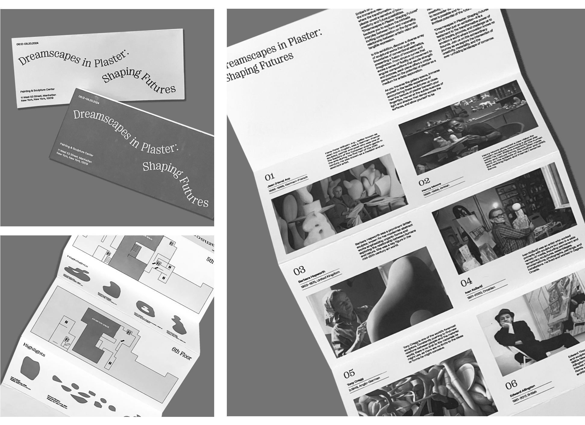

Ing Klewpatinond /
Design Portfolio 2025





Dynamic Identities: Suvarnabhumi Airport Rebrand (2024)
BRANDING & IDENTITY / GRAPHIC DESIGN / MOTION GRAPHICS
Rebranding project for Bangkok Suvarnabhumi airport (BKK). This project involved creating a versatile and dynamic branding system that draws for the airport’s infrastructure and embodies the essence of Thailand's cultural identity. The system is designed to adapt to various touchpoints, including signage, digital interfaces, and marketing materials, providing a cohesive yet flexible visual language.
Block Mono (2024)
TYPEFACE DESIGN / GRAPHIC DESIGN
Block mono is a sleek monospaced sans-serif typeface that takes inspiration from industrial design, architecture and construction, whilst incorporating a hint of calligraphic flair. Each glyph was constructed with careful atttention to the harmonious balance between sharp, precise angles and rounder cut corners. The design ensures legibility across all sizes, providing just the right amount of contrast for clarity in every character.

Historic Monuments of Ancient Kyoto: Kyoto, Uji & Otsu Cities (2024)
BRANDING & IDENTITY / GRAPHIC DESIGN / PUBLICATION DESIGN
Identity and editorial design for the UNESCO site "Historic Monuments of Ancient Kyoto: Kyoto, Uji and Otsu cities". Encompasses a variety of deliverables including billboards, motion poster, and merchandise.
Luck For Sale: The Economy of Belief (CD Thesis) (2025)
BRANDING & IDENTITY / GRAPHIC DESIGN / PUBLICATION DESIGN
As convenience and efficiency have become the main factors driving modern lifestyles, even deeply personal and spiritual practices have adapted to fit the fast-paced rhythm of urbanized societies. Sacred rituals, once deeply rooted in tradition and community, are increasingly commodified and repackaged into easily consumer-friendly, ready-made solutions, making faith more accessible—but also more transactional. This project explores and provides a critical commentary on the intersection of belief systems, material culture, and capitalism in contemporary Thailand through a design-driven lens.
Handcrafted Identities: Cha-An Rebrand (2024)
BRANDING & IDENTITY / GRAPHIC DESIGN
Rebranding of Cha-An, a cafe and teahouse specializing in Japanese tea and desserts, with the goal of adapting traditional aesthetics to modern times. The identity focuses on creating an inviting, intimate atmosphere rooted in craft and care. Inspired by the quiet elegance of Japanese tea culture, the design embraces hand-crafted processes, logos rendered through hand-carved stamps, textured ink impressions, and organic misalignments that celebrate imperfection.

SYNC: Group Travel App (2025)
UX/UI
A Travel App specifically designed to streamline the planning and execution of group trips, allowing users to collaborate on itineraries, create polls and cast votes, split expenses, and track each other's locations.
Little Canal Rebrand (2024)
BRANDING & IDENTITY / GRAPHIC DESIGN / PUBLICATION DESIGN
Rebrand of Little Canal, a small coffee shop and bar located in New York City's Chinatown. The new identity emphasizes a strong sense of community, neighborhood spirit and bringing people together, brought to life through bold visuals and a tactile, street-level energy.

Dreamscapes in Plaster: Shaping Futures (2024)
BRANDING & IDENTITY / GRAPHIC DESIGN / PUBLICATION DESIGN
Rebranding of Cha-An, a Cafe/ Teahouse specializing in Japanese Tea and desserts, with the goal of adapting traditional aesthetics to modern times.

NYC in Data: Elevators in NYC (2023)
INTERACTION DESIGN / DATA VISUALIZATION
Data Visualization of the elevators in the different boroughs of NYC, taking into account data on capacity, speed, etc. Dataset was taken from https://www.kaggle.com/datasets/new-york-city and anomalies were filtered out so that only consistent data remains. After sorting dataset into JSON file, P5.js was used to create the visualization.
(in)tangible: Preserving Japanese Ceramics (2023)
BRANDING & IDENTITY / GRAPHIC DESIGN / PUBLICATION DESIGN
(in)tangible is an ode to 6 ceramists deemed as Japan’s National Living treasures—innovators rooted in tradition, embracing the intangible essence that makes Japan’s pottery a living, breathing cultural treasure. Join us in celebrating the skills, craftsmanship and lifelong dedication to the craft of pottery of Inoue Manji, Yoshita Minori, Ito Sekisui V, Isezaki Jun, Hara Kiyoshi and Maeta Akihiro, whilst simultaneously playing a part in preserving the craft for future generations to come.